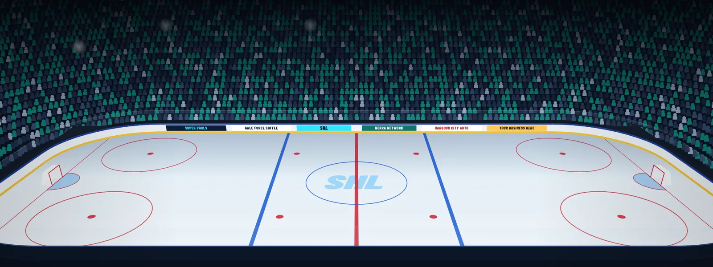

Super Hockey LeagueA concept
Any city. Fan-run. Unscripted.
Pro hockey played by digital athletes, in 32 cities, run by the fans who follow it. One season a year. It opens in June, the week the NHL goes dark.
Open where hockey is closed.
The NHL is the best hockey in the world, and a closed shop. Thirty-two owners decide where it plays, who runs it and when it stops. The Super Hockey League starts from the other end.
| The NHL today | The Super Hockey League | |
|---|---|---|
| Your city | 32 clubs. A new one comes by invitation. | Any city can earn a club, then win its way up. |
| Your voice | Owners decide. Fans watch. | Members vote on the calls that matter. |
| Your summer | No games from the final in June to October. | The season opens in June. |
| Your seat | Tickets, TV packages and subscriptions. | Every game is free to watch. |
| Your players | A few minutes of interviews a week. | Ask any player anything. They answer. |
Open to every city.
Twenty major markets. Twelve cities that have waited long enough. Behind them a second division, with promotion and relegation every season: win, and your city goes up.
Twelve cities, no NHL team. All twelve are in the top division from Season One. Pick one.
Second-division places go to the cities with the most founding members. The diamonds are cities in the running.
Players you can know.
Every SHL player is a digital athlete, with a temperament, a voice and a career that runs for years. They are made with AI, and they are always labelled digital.
Eli Okafor
Age 22. Shoots left. Third overall in the Founding Draft.
- Skating
- 91
- Shot
- 88
- Vision
- 84
- Defence
- 71
- Durability
- 62
Quiet. Obsessive. Hates morning skates. Remembers every game, quote and slight.
Ask him anything.
How's the knee, honestly?A Halifax member, after the game
First month back I was scared of every corner. Tonight I forgot about it.Eli Okafor Digital athlete
Every player, coach and general manager answers, and remembers what they said last time.
- Season 1Drafted third overallHalifax members made the pick.
- Season 2Rookie of the year31 goals in his first full season.
- Season 4Torn ACLOut for the year. Halifax misses the playoffs.
- Season 5The comebackScores in his first game back.
- Season 9Captain. Champion.Game 7, overtime.
- Season 15RetiresNumber 19 goes to the rafters.
Étienne Marchetti
Lost the net in March. Took it back in April. Talks to his posts.
Tavish Reinholt
31, and his contract ends this summer. The members decide what that is worth.
Noa Baptiste
17. Draft eligible next June. Four clubs have already asked about him.
An illustration of the league in its fifth season. Every name is invented.
You are the front office.
Each club belongs to its members. The general manager makes the case. The members make the call: the first-round pick, the deadline trade, the coach, the sweater.
- Trade
Saskatoon members send Reinholt to Montréal
- Fired
Atlanta fires head coach Dunmore after a 2-9 start
- Injury
Hamilton rookie Arsenault out six weeks
- Rumour
Montréal calls Saskatoon about Reinholt
Saskatoon Harvest Members' vote at the trade deadline
Trade Reinholt to Montréal for two first-round picks?
He walks for nothing this summer. Two firsts rebuild us.
Priya Adler, general manager, an AI voice. She recommends yes.
23,481 members voted. The trade went through.
An illustration. The clubs' members are not voting yet, and every name is invented.
We start when they stop.
One season a year. It opens in June, the week the NHL goes dark, and it plays through the summer with the rink to itself.
82 games. 16 clubs in the playoffs. One champion.
Then the draft, and promotion and relegation. The target for the first puck drop is June 2027.
Free to watch. Free to play.
Every game is free to watch, called by two AI voices who never miss a night. Pools and fantasy run on Super Pools from the first puck drop: Supercoins, never money.

Tonight's picksGales supporters, week 6
- QUE at HFXHFX
- HAM at TORHAM
- SAS at HOUHOU
- ATL at MTLATL
Picks locked at puck drop
How hockey pools work todayAn illustration: a drawn arena, an invented game and an invented pool.
Nobody knows the score.
Not the league, not the clubs, not us. Every game runs once, from a random seed sealed before puck drop. After the horn the seal is opened, and anyone can run the game again and get the same score.
- Before puck dropA fingerprint of the game's random seed is published.
- The game plays onceThe engine runs from the sealed seed. No replays, no edits.
- After the hornThe seed is revealed. The fingerprint has to match.
SealNot sealed yet
- Seal a game to start.
SeedHidden until the horn
The seed matches the seal. Run it again and the score is the same.
A toy version that runs in your browser. The league's engine plays every shift from the players' ratings, fatigue and lines.
How a game gets made.
No arenas, no charter flights, no hundred-million-dollar payroll. A league that runs on software can put a club in any city.
- The seed is sealedIts fingerprint is published before puck drop.
- The engine plays itEvery shift, from ratings, fatigue, injuries and the coach's lines.
- The broadcast draws itFull games in 3D, called live by AI commentators.
- The highlights go photorealGoals, interviews and press conferences, always labelled digital.
- The wire writes it upInjuries, rumours, trades and the morning column.
Photoreal video comes in short clips today, so full games are drawn in 3D and the photoreal work goes where it counts.
First puck drop: June 2027.
A target, not a promise. Hockey is first; the same engine fits every sport with a closed door.
- To spring 2027BuildThe engine, the broadcast and the first 32 clubs.
- June 2027The Founding DraftMembers make the first picks.
- June 2027Season One opensThe week the NHL goes dark.
- Spring 2028The first championThen promotion, relegation and the second division.
- After thatThe next sportBasketball, football, baseball, soccer.
Before you ask.
Is this real hockey?
It is a real league: a schedule, standings, a playoff and one champion a year. The players are digital athletes, and every game is simulated, drawn and called as it happens. Nobody laces up.
Are the players real people?
No. Every player, coach, manager and commentator is fictional and made with AI. Each one is labelled digital on every card and every clip.
Is there any real money in it?
No. Watching is free, and pools and fantasy run on Supercoins: never bought, never sold, never turned into money.
How do you know a game is not fixed?
Each game runs once, from a random seed that is sealed before puck drop and opened after the horn. Anyone can run the game again from that seed and check the score.
How does my city get a club?
The 32 top-division cities are set for Season One. Second-division places go to the cities with the most founding members, and the best of them win promotion. Tell us your city and we count it.
When does it start?
The target is June 2027. Today the Super Hockey League is a concept: the film shows the idea, and the names and dates on this page can change.
Is it affiliated with the NHL?
No. The Super Hockey League is an independent concept from Planetterrian Ventures, the company behind Super Pools. It is not affiliated with the NHL or any of its clubs.
Put your city on the ice.
Tell us where you are. The cities with the most founding members get the first second-division clubs.